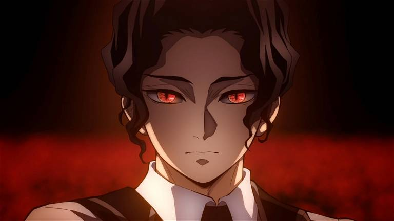
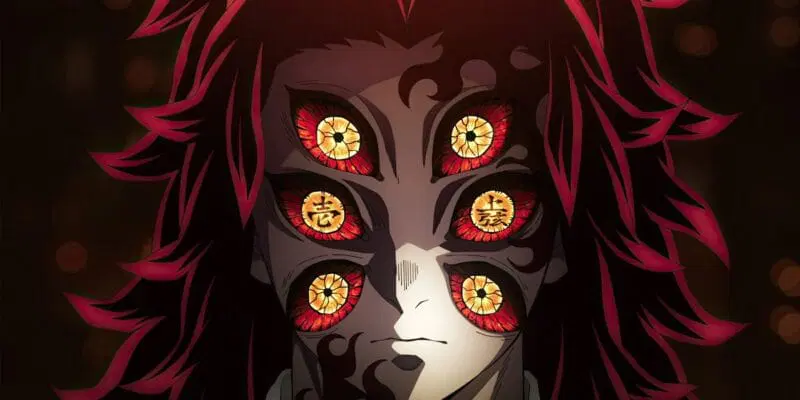
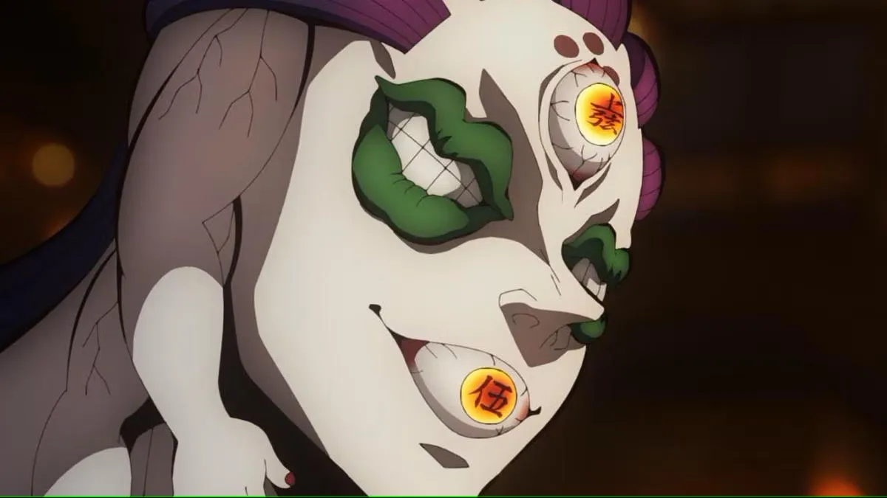
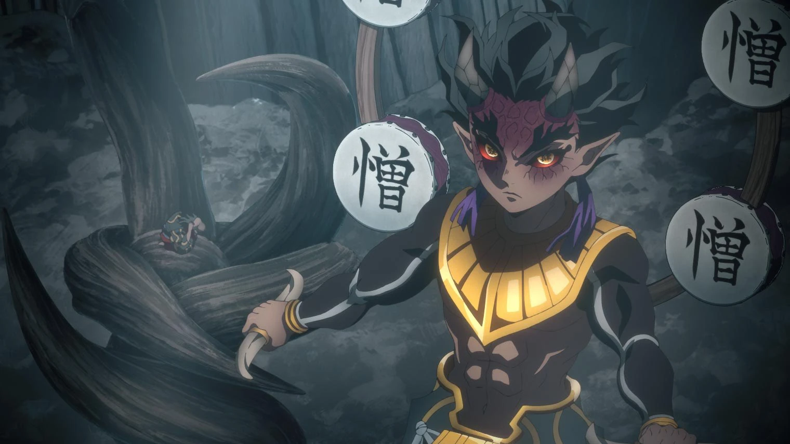
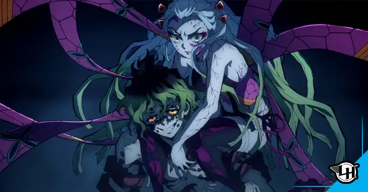
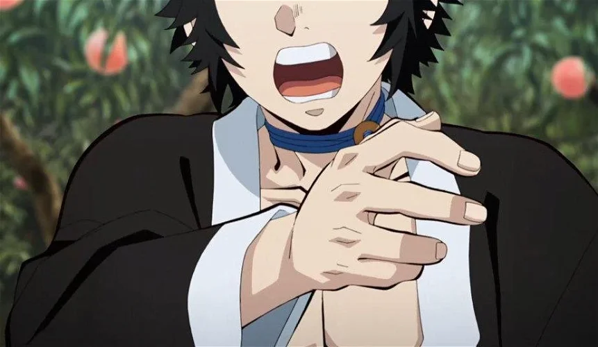
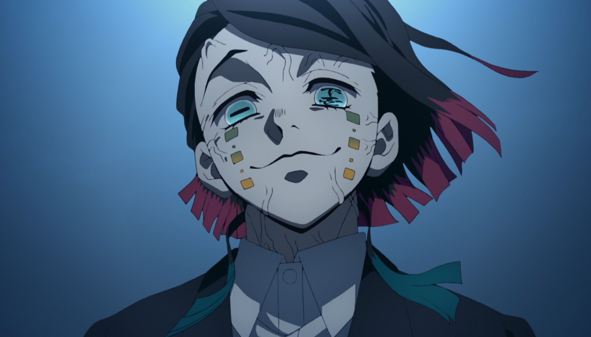
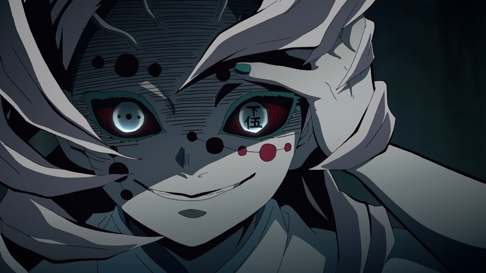

Explore os 10 Demônios Mais Memoráveis de Kimetsu no Yaiba

Os demônios de "Kimetsu no Yaiba" são uma parte essencial da atmosfera sombria e emocionante da série. Com suas aparências grotescas e habilidades aterrorizantes, esses seres maléficos cativaram os fãs com seu carisma assustador e momentos de pura tensão.
Muzan Kibutsuji
O principal antagonista da série, Muzan é o primeiro demônio e o líder dos Doze Kizuki. Ele tem a habilidade de alterar sua forma e possui poderes regenerativos extremos. Muzan é responsável pela transformação de Nezuko e pelo massacre da família de Tanjiro.
Kokushibo
Um dos demônios mais fortes, ex-Hashira e usuário da Respiração da Lua. Kokushibo possui uma técnica de espada extremamente avançada e pode gerar crescentes lunares como projéteis.
Akaza

Conhecido por seu combate corpo a corpo e Jutsu de Sangue que gera ondas de choque. Akaza enfrentou e quase derrotou Tanjiro e Giyu Tomioka durante o arco do Trem Infinito.
Doma

O segundo Lua Superior, Doma possui uma personalidade carismática e usa técnicas de gelo em combate. Ele enfrentou e foi derrotado por Kanao e Inosuke.
Gyokko
Ocupa o quinto lugar entre os Luas Superiores. Gyokko tem uma aparência grotesca e usa técnicas baseadas em vasos que invocam criaturas demoníacas.
Hantengu
Este demônio pode manifestar suas emoções como clones, cada um com habilidades únicas. Hantengu enfrentou Tanjiro, Nezuko, Genya e Mitsuri Kanroji.
Gyutaro e Daki
Irmãos que compartilham a posição de Lua Superior 6. Gyutaro é habilidoso em combate e Daki usa faixas como armas. Eles foram derrotados por Tanjiro e Tengen Uzui.
Kaigaku
Ex-caçador de demônios e usuário da Respiração do Relâmpago, Kaigaku se tornou um demônio após ser seduzido pelo poder de Kokushibo1.
Enmu
O único demônio Lua Inferior nesta lista, Enmu pode colocar seus adversários para dormir e persegui-los em seus sonhos. Ele é o antagonista principal do arco do Trem Infinito.
Rui
Um dos primeiros demônios significativos a aparecer na série, Rui tem uma aparência infantil e usa fios como armas. Ele enfrentou e foi derrotado por Tanjiro e Nezuko no Monte Natagumo.